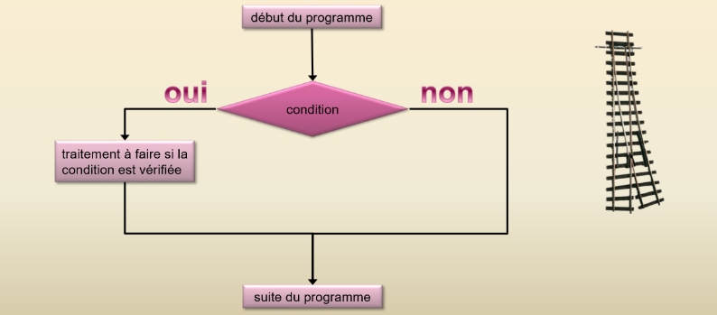
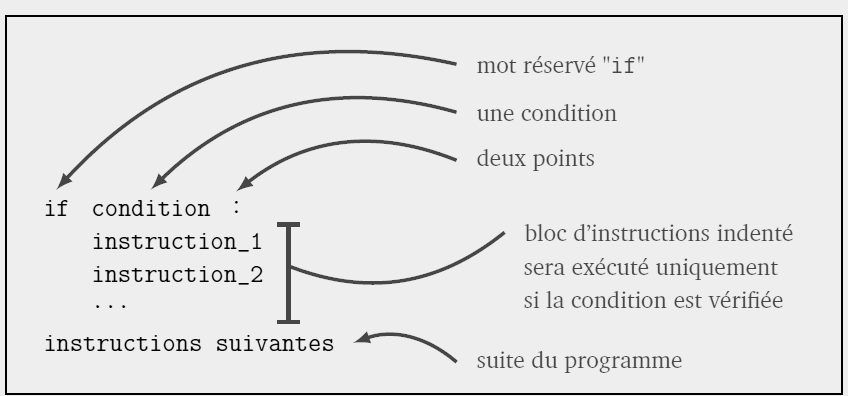
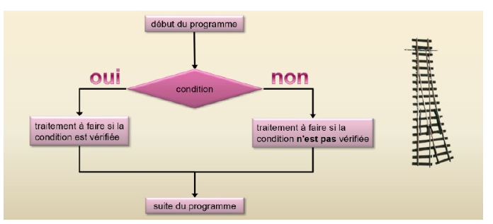
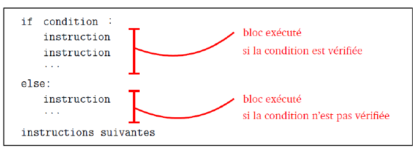
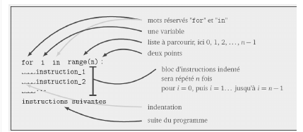
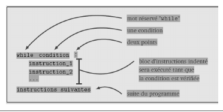

Contrôle du flux d'éxecution#
Introduction#
Jusqu'à présent, nous avons vu des algorithmes simples qui se déroulent en séquence de la première à la dernière instruction.
Cependant, ces instructions en séquence ne suffisent pas à exécuter des algorithmes plus complexes où :
- Certaines séquences d'instructions ne peuvent être exécutées que sous certaines conditions : structures conditionnelles (if… else)
- Certaines séquences d'instructions nécessitent d'être exécutées un certain nombre de fois : structures itératives (boucle for et boucle while)
Le chemin suivi par le programme est appelé le flux d'exécution et les instructions qui le modifient sont appelées les instructions de contrôle de flux.
Les structures conditionnelles#
L'instruction conditionnelle Si (if)#
Dans certains cas, on ne veut exécuter une série d’instructions que sous une condition.

Syntaxe :

Après avoir tapé if condition : et appuyé sur entrée, l'éditeur va alors automatiquement indenter (décalage vers la droite) les lignes d'instructions suivantes. En effet, toutes les instructions qui doivent être effectuées si la condition est vraie doivent être indentées, et elles doivent avoir impérativement la même indentation.
Exemple : le programme suivant affiche candidat reçu mais uniquement que celui-ci ait une moyenne supérieure ou égale à 10.
L’évaluation de la condition#
En fait la condition évaluée m >= 10 renvoie un booléen, True (vrai) ou False (faux). Il est
possible de le vérifier en rajoutant l’instruction suivante en fin de programme :
Opérateurs de comparaison et opérateurs logiques#
Afin d’écrire une condition, on utilise les opérateurs de comparaison suivants :
| Opérateur | Signification littérale |
|---|---|
| < | strictement inférieur à |
| > | strictement supérieur à |
| <= | inférieur ou égal à |
| >= | supérieur ou égal à |
| == | égal à |
| != | différent de |
Attention : l’égalité de deux valeurs est exprimée avec l’opérateur « == » et non « = ». Ce dernier est en effet l’opérateur d’affectation et ne doit pas être utilisé dans une condition.
Ces opérateurs de comparaisons peuvent être combinés aux opérateurs logiques (ou opérateurs booléens) suivants :
| Opérateur | Rôle |
|---|---|
| a and b | Vraie si a et b sont vraie |
| a or b | vraie si a ou b (ou les deux) sont vraies |
| not(a) | si a est vraie, not(a) est fausse et inversement |
Exemple : le programme suivant détermine si le candidat aura une mention BIEN. Pour cela sa note doit être supérieure ou égale à 12 et inférieure strictement à 14 :
Là encore, l'expression évaluée : m >= 10 and m < 12 renvoie un booléen :
Remarque n°1 : En python (contrairement au langage Java par exemple), la condition if (m>= 12 and m <1 4) : peut être remplacée par la condition if(12 <= m <14).
Remarque n°2 : En python, la condition évaluée n'est pas obligatoirement entre parenthèses, mais dans le cas d'expressions complexes, les parenthèses sont vivement conseillées.
L'instruction conditionnelle Si... Sinon ... (if… else…)#
Dans certains cas on ne veut exécuter une séquence d'instructions que si la condition évaluée est vraie et exécuter une autre séquence d'instruction si la condition évaluée est fausse.

Syntaxe :

Exemple : le programme renvoie systématiquement une réponse : "candidat reçu" (si condition évaluée vraie) sinon "candidat non reçu" si condition évaluée fausse) :
Exercice 1
Écrire un programme qui demande la température d'une maison. Si celle-ci est inférieure à 19°C, afficher "il faut allumer la chaudière". Sinon, afficher "La chaudière reste éteinte".
L'intruction elif#
Il est possible d'ajouter autant de conditions précises que l'on souhaite en ajoutant le mot clé elif, contraction de "else" et "if", qu'on pourrait traduire par "sinon".
Exercice 2
Écrire un script qui demande la note au bac et qui affiche la mention correspondante. Données :
- si la note est supérieure ou égale à 16, la mention au bac est TB ;
- si la note est supérieure ou égale à 14 et inférieure à 16, la mention au bac est B ;
- si la note est supérieure ou égale à 12 et inférieure à 14, la mention au bac est AB ;
- si la note est inférieure à 12 et supérieure ou égale à 10, la mention au bac est Passable ;
- si la note est inférieure à 10, vous n'avez pas le bac.
Tester autre chose que des nombres#
Il est possible de tester autre chose que des nombres, par exemple des caractères
Il est même possible de savoir si la lettre tapée se trouve avant ou après une lettre donnée dans l'alphabet :
Tracer l’exécution d’une structure de choix#
Dans un programme contenant une structure de choix, Il y a deux chemins d’exécution possibles suivant si la condition évaluée est vraie ou fausse. Si l’on veut analyser les deux chemins, on doit faire la trace une première fois avec une valeur qui remplit la condition, puis une seconde fois avec une valeur qui ne la remplit pas.
Considérons le script ci-dessous.
Exercice 3
Choisir une valeur de la variable val qui satisfait la condition évaluée est réaliser la trace. Recommencer avec une valeur de variable qui ne satisfait pas la condition évaluée.
Structures itératives#
Boucle for#
Les traitements informatiques nécessitent souvent l'exécution de tâches répétitives.
La boucle for permet d’effectuer un nombre de fois bien déterminé le corps de boucle (séquence d'instructions). Elle
s'utilise généralement avec la fonction range(n) qui permet de générer une séquence de nombres entiers allant de 0 à
\(n\) exclu.

Syntaxe :

Après avoir tapé for i in range(n): et appuyé sur entrée, l'éditeur va alors automatiquement indenter les lignes
d'instructions suivantes. En effet, toutes les instructions à répéter doivent être indentées, et elles doivent avoir
impérativement la même indentation.
Exemple 1 : le code suivant répète 10 fois l'instruction suivante.
La fonction range() peut accepter 3 arguments :
range (valeur_début, valeur_fin, pas). Les 3 arguments (valeur_début, valeur_fin, pas) sont obligatoirement des entiers.
Exercice 4
Écrire un programme, qui affiche 50 fois ”Je dois travailler ma NSI tous les soirs” à l’aide de l’instruction `for'.
Exercice 5
Écrire deux programmes qui affichent tous les nombres pairs entre 8 et 17.
Exercice 6
Écrire un programme qui compte de 100.4 à 103.2 par pas de 0.1
Exercice 7
L’«ASCII Art» consiste à utiliser les caractères alphanumériques du code ASCII pour produire des images. Nous allons commencer par dessiner un carré à l’aide de la lettre X. Écrire le programme qui affiche le carré ci-dessous (taille 8), en définissant une fonction qui prend en paramètre la longueur du côté.

Exemple 3 :
Le programme suivant calcule \(x^n\) :
Tracer l’exécution d’une boucle for#
Exercice 8
La fonction factorielle réalise le calcul suivant : n! = 1 × 2 × 3 × … × (n-1) × n
Par exemple : 5 ! = 1 × 2 × 3 × 4 × 5 = 120.
Réaliser la trace du programme suivant qui calcul la factorielle d’un nombre entier saisi par l’utilisateur.
On prendra \(n\) = 5
Trace du programme :
| N° ligne | n | x | i | Commentaires |
|---|---|---|---|---|
La boucle while (boucle conditionnelle non bornée)#
La boucle while est assez peu différente de la boucle for. On l'utilise lorsque l'on ne sait a priori pas combien de boucles vont être effectuées. On l'utilise également lorsque l'on veut réaliser des incrémentations avec un pas qui ne soit pas entier, par exemple lors d'un tracé de courbe.
La boucle « tant que » exécute le corps de boucle (instructions indentées) tant qu’une condition évaluée dans le test de poursuite est vraie. Dès que la condition devient fausse, elle passe aux instructions suivantes.

Syntaxe :

Attention : lorsque que l'on utilise une boucle while, il faut s'assurer que la condition évaluée dans le test de poursuite deviendra fausse à un moment ou un autre, sinon ...le programme va boucler indéfiniment !
Exemple : Le programme suivant indique tous les entiers x dont le carré est inférieur à un nombre n donné et indique également leur nombre (0 compris).
Exercice 9
Effectuer la trace du programme précédent et préciser le rôle de ce programme.Exercice 10
exercice 6 p 42 du livre
Exercice 11
exercice 7 p 42 du livre
Exercice 12
exercice 9 p 42 du livre
Exercice 13
Écrire le script du jeu de devinette suivant. Le jeu consiste à deviner un nombre entre 1 et 100. Le programme demande à l'utilisateur de rentrer une valeur et le programme lui affiche si ce nombre est trop petit, trop grand ou gagné. Le programme compte aussi le nombre d'essai pour trouver la bonne valeur.
Exemple :
---> 50
trop petit !
---> 75
trop petit !
---> 87
trop grand !
---> 81
trop petit !
---> 84
trop petit !
---> 85
Gagné en 6 coups !
Données : pour choisir un nombre au "hasard", on utilise la fonction randint() de la bibliothèque random.
Exemple :
Boucle for ou boucle while#
Lorsque l’on sait au départ combien d’itérations devront être réalisées, il faut utiliser une boucle for, moins consommatrice en ressources machine que la boucle while. La boucle while, quant à elle, est utilisée lorsque l’on ne sait pas à priori combien d’itérations seront effectuées (par exemple si on écrit un programme qui effectue de manière aléatoire un lancé de dés, et cela jusqu’à ce que le 6 sorte).
Imbrication de boucles#
Il est possible d’imbriquer des boucles, c’est-à-dire que dans le bloc d’une boucle (boucle extérieure), on utilise une nouvelle boucle (boucle intérieure).
Exemple : Il est possible de modifier le programme de la table de multiplication vu précédemment afin qu'il affiche toutes les tables de multiplication de 1 jusqu'à 10. Pour cela, il suffit d'imbriquer le programme précédent à l'intérieur d'une boucle qui fait varier \(n\) de 1 à 10
Les chaînes de caractères#
Les énumérables#
En mathématiques, on dit qu'un ensemble est dénombrable lorsqu'on peut associer à chaque élément de l'ensemble un nombre (traditionnellement 1, 2, 3 ...)
- les fraises Tagada d'un paquet sont dénombrables.
- les voitures qui roulent sur l'autoroute sont dénombrables.
- l'eau qui coule d'un robinet n'est pas dénombrable.
En informatique, il existe un concept similaire qui va désigner les objets que l'on peut énumérer, c'est-à-dire les décomposer en une succession ordonnée d'éléments. On les appelle les énumérables ou les itérables (Python utilise le mot anglais iterable).
- la variable "NSI" (qui est de type String) est énumérable : on peut la décomposer en
N,S,I. - la variable [4, 3, 17] (qui est de type List) est énumérable : on peut la décomposer en
4,3,17. - la variable 5 (qui est de type Int) n'est PAS énumérable : on ne peut pas la décomposer.
Solution directe : parcours d'une chaine par les éléments#
Une chaîne de caractères (type string) est composée de ... caractères ! Il est possible de parcourir ces caractères avec une structure for... in...
Exemple : le programme suivant demande une chaîne de caractères et insère un "." entre chaque caractère :
Solution indirecte : parcours d'une chaîne à partir des indices#
Il est possible d'accéder à chaque caractère d'une chaîne à l'aide de son indice de position. Le premier caractère est toujours indexé 0.
Exemple : pour afficher le 1er et 5ème caractère d'une chaîne :
Pour balayer l'ensemble des caractères de la chaîne de caractères :
Remarque : le fonction len() retourne la longueur de la chaîne.
Exercice 14
Réaliser un programme qui demande une chaîne de caractères et une lettre et indiquera le nombre de fois que la lettre à été rencontrée dans la chaîne de caractères.
Exercice 15
Réaliser un programme qui demande un mot et détermine si oui ou non ce mot est un palindrome, c’est-à-dire qu'il peut se lire indifféremment dans les 2 sens, par exemple radar, S.O.S, ...
Exercices#
Exercice 16
Réaliser un programme qui simule un lancer de 3 dés. Le programme devra :
- Afficher le résultat du lancer ;
- Indiquer s'il y a un triple et si oui, indiquer la valeur.
- Indiquer s'il y a un double et si oui, indiquer la valeur (ne pas afficher dans le cas d'un triple)
- Indiquer également s'il n'y a aucun double ou triple.
Exercice 17
Résoudre à l'aide d'un programme le problème suivant. Une balle est lâchée d'une hauteur initiale \(h\) et rebondit à chaque fois au 2/3 de sa hauteur. On considère qu'elle ne rebondit plus lorsque la hauteur devient strictement inférieure 5 cm. Calculer le nombre de rebonds de la balle
Exercice 18 pour ceux qui ont terminé
A l'aide d'un programme, vérifier que la probabilité de tirer un 6 lors d'un jeter de dé est bien de 1/6.
Exercice 20
Exercice 28 p 44 du livre